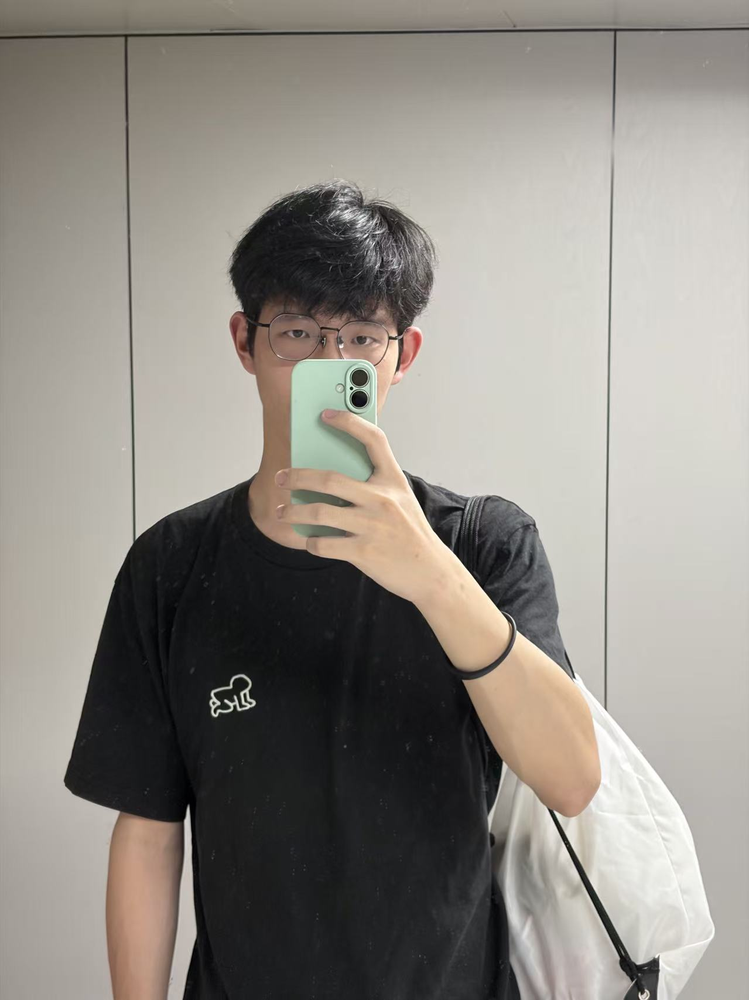

Zhuhan Bao
SE Junior in Hangzhou City University · Visiting Student in Duke University

Hi! I'm Zhuhan Bao (鲍竹涵), a junior undergraduate majoring in Software Engineering at Hangzhou City University. I am currently participating in a remote visiting study program at Duke University School of Medicine.
I work in Prof. Chuan Hong's research group. My current research focuses on Artificial Intelligence and Agents, including AI for Healthcare, Medical NLP, and Medical World Models.
News
- Second Prize at the East China Regional Final of the Service Outsourcing Innovation Competition.
- Second Prize at 2026 ASC Student Supercomputer Challenge.
- Excellent Award, 1st National Service Computing Innovation Competition.
- Visiting Student at Duke University, advised by Prof. Chuan Hong.
- Second Prize at 2025 ASC Student Supercomputer Challenge.
- Visiting Student at Zhejiang University NESA Lab, advised by Dr. Peiyu Liu.
Education
Research
Clinical dialogue simulation, medical AI agents, and synthetic healthcare data generation. Leading LLM-based simulation frameworks for behaviorally grounded doctor–patient interaction modeling. Maintaining DCC computing cluster and H200 GPU benchmarking for large-scale AI research.
MCP server ecosystem security in AI-assisted code editors. Developed MCP-Collector for automated MCP Marketplace data collection and classification.
Medical multimodal dataset construction from online teaching videos. Building a bilingual (CN-EN) pathology image-text dataset and fine-tuning CLIP with LoRA for intelligent pathology diagnosis.
Publications
* Equal contribution · † Corresponding author
Projects
Accelerated UnifoLM-WMA-0 inference with mixed precision (FP16/TF32), Flash Attention, CUDA Graph, fused DDIM kernels, and pinned memory pipeline. Achieved 2.68× speedup over FP32 baseline, passing all 20 robotic evaluation scenarios at PSNR ≥ 25 dB.
Optimized RNA m5C modification site detection workflow. Automated data cleaning, alignment, deduplication, and statistical filtering. Achieved significant improvements in runtime and memory usage.
Teaching
Designed assignments, led problem-solving on MPI, OpenMP, and parallel algorithms.
Leadership
Leading the HPC team in competitions (ASC, IndySCC). Training on Slurm, parallel programming, and cluster operations.
Organized free equipment maintenance, solving 500+ problems at 98% satisfaction. Expanded service coverage and trained 25 new members.